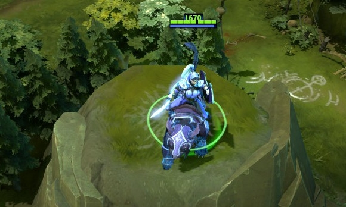
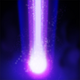

 露娜
露娜
背景故事
她曾经是被称为平原之灾的残酷领导者，率领着众多爪牙和野兽，敢于在任何地方肆虐。但不知为何沦落为现在这副样子。远离故土，饥饿至半疯状态流浪了好几个月，她的军队早已成为了尸体，甚至某些更糟的东西。当她站在一片古老森林的边缘时，那古老的树枝之间有一双灼热的眼睛正在暗中监视她。在这落幕的黄昏中，某种美丽但致命的野兽正在寻找一顿美餐。它悄无声息的转身离开了。愤怒占据了她的大脑。她紧紧抓住手中生锈的匕首，冲向那只野兽，只为寻回一丝曾经的荣誉。但这只猎物却无法被抓住。她三次将它逼进岩石和树木的死角，但每次她要扑上去抓住它时，都只能看见一丝褐色残影冲进森林的深处。不过由于满月的月光十分明亮，这头野兽的足迹很容易追踪。当一路追到一座高山开阔的山顶上时，这头体型巨大的野兽就那么坐在那里，专注地等待着她。当她挥起匕首刺过去时，野兽后退了一下，然后咆哮着冲向她。在坚持了这么久之后，在这片陌生的土地上，她似乎感到了自己的死期终于到来了。她平静的站在那里，准备接受结局。但在这一瞬间，野兽夺下了她手中的匕首，然后消失进了树林中。此时万物归于平静，几个戴头巾的身影靠近了她。她们用虔诚的语气告诉她，月之女神赛莉蒙妮选择了她，并指引了她，也测试了她。在不知不觉中，她已经通过了银夜森林的守卫者-暗月骑士的神圣仪式。
月光 魔法消耗：90/100/110
冷却时间：6.0/6.0/6.
|
月刃 魔法消耗：0
冷却时间：0
|
月之祝福 提升露娜和附近友方英雄的攻击力，而露娜受到福佑后夜间视野上升。 魔法消耗：0
冷却时间：0
|
月蚀 召唤一次月蚀，以她当前技能等级的月光随机打击附近敌人。月光只有伤害效果，不会造成眩晕，而且单一目标只能受到有限次数的打击。月蚀会暂时将白天变为黑夜，持续10秒。可用神杖升级。 如果露娜没有升级月光，月蚀将无法造成伤害，但是变为黑夜效果有效。 魔法消耗：150/200/25
冷却时间：140.0
|